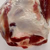
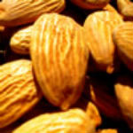
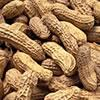
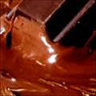
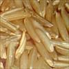
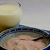
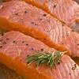

<!DOCTYPE html>
<html>
  <head>
    <meta charset="utf-8">
    <meta name="viewport" content="initial-scale=1, maximum-scale=1, user-scalable=no, width=device-width">
    <title></title>

    <link href="lib/ionic/css/ionic.css" rel="stylesheet">
    <link href="css/style.css" rel="stylesheet">

    <!-- IF using Sass (run gulp sass first), then uncomment below and remove the CSS includes above
    <link href="css/ionic.app.css" rel="stylesheet">
    -->

    <!-- ionic/angularjs js -->
    <script src="lib/ionic/js/ionic.bundle.js"></script>

    <!-- cordova script (this will be a 404 during development) -->
    <script src="cordova.js"></script>

    <!-- your app's js -->
    <script src="js/app.js"></script>
 
 
     <!-- Creates Java Script = Text for pages (tabs) -->
  <script type="text/javascript">
      angular.module('calorific', ['ionic'])

      .config(function($stateProvider, $urlRouterProvider) {

        
        $urlRouterProvider.otherwise('/');
        
        $stateProvider

        .state('state1', {
          url: '/',
          templateUrl: 'state1.html'
        })

        .state('state2', {
          url: '/state2',
          templateUrl: 'state2.html'
        })			
		
		  .state('state3', {
          url: '/state3',
          templateUrl: 'state3.html'
        });
		
		

      })
    </script>
  </head>
  
  <!-- Creates Name  -->
  <body ng-app="calorific">
    <ion-nav-view>
    </ion-nav-view>
	
	  <!-- Creates scrip Page 1 (Homepage)  -->          
    <script type="text/ng-template" id="state1.html">
       <!-- Creates Name Title  -->
	 <ion-view view-title="Home">
		<ion-content>
		
		  <!-- Creates header Home + reset button -->
		<div class="bar bar-header">
  <h1 class="title">Home</h1>
  <button class="button" onclick="reset()">Reset</button>
</div>

 <!-- Creates Divider + sub header + form asking for details , storing them  -->
<br> </br> <p>  </p>
	<div class="item item-divider" >
	<span style="padding-left:60px;"><b> Calorie Maintence Calculator </b></span> 
  </div>		
		<form id = "form"> 
  
  <label class="item item-input">
  <input id="weight" type="number" min="1"  placeholder="Enter Your Weight (Kg): ">
  </label> 
 
  <label class="item item-input">
  <input id="height" type="number" min="1" placeholder="Enter Your Height (Cm): ">
  </label> 
  
  <label class="item item-input">
  <input id="age" type="number" min="1" placeholder="Enter Your Age: ">
  </label>
 
   <label class="item item-input">
  <input id="exercise" type="number" min="0" max="7" placeholder="Excercise (0-7) times/week: ">
  </label>
   
   <label class="item item-input">
  <input id="calories" type="number" min="0" placeholder="Enter Calories Consumed Today: ">
  </label>
 
<!-- Creates Button submit goes to method in javascript + 3 outputs-->
    <div class="button-bar">
  <button class="button button-assertive" onclick="cal1()">
  Submit
</button>
  </div> 
   <p>  <div id="user"> </div></p>
 <p>  <div id="output"> </div></p>
 <p>  <div id="left"> </div></p>
	</form>		
      </ion-content>		
	  <!-- Footer menu -->
			  <ion-footer-bar class="bar bar-footer bar-balanced">	
	<div class="tabs tabs-icon-top">
  <a class="tab-item">
    <i class="icon ion-home" ></i>
    Home
  </a>
  <a class="tab-item" a href="#/state2">
    <i class="icon ion-man"  ></i>
    Weight Converter
  </a>
  <a class="tab-item" a href="#/state3">
 <i class="icon ion-information"></i>
    Calorie Foods
  </a>
</div>
	  </ion-footer-bar>					
      </ion-view>
    </script>
	

<!-- Creates Script access form stores it , creates method cal1 calculating BMR + switch statement then outputs it, + rounded to whole number + reset button -->	
	<script>
		var form = document.getElementById("form");
		function cal1(){

      var BMR = 10 * document.getElementById("weight").value + 6.25 * document.getElementById("height").value -5 * document.getElementById("age").value + 5;
	  var calories = document.getElementById("calories").value;
      var d = document.getElementById("exercise").value;
	 
      switch(d){
        case '0':
        BMR *= 1.2;
        break;
        case '1':
        BMR *= 1.375;
        break;
        case '2':
        BMR *= 1.375;
        break;
        case '3':
        BMR *= 1.55;
        break;
        case '4':
        BMR *= 1.55;
        break;
        case '5':
        BMR *= 1.55;
        break;
        case '6':
        BMR *= 1.725;
        break;
        case '7':
        BMR *= 1.725;
        break;
      }

      //BMR NOW SHOULD BE THE MAINTINANCE
		// alert( x );
		 var div = document.getElementById("output");
		 var left1= document.getElementById("left");
		 left1 = BMR - calories;
		 var leftR = left1.toFixed(0);
		 var  BMRR = BMR.toFixed(0);
		user.innerHTML = "Your Calories: " + calories ;
		div.innerHTML = "Total Calories Allowed: " + BMRR ;
		left.innerHTML = "Total Calories Left: " + leftR ;
};

function reset () {
document.getElementById("form").reset();
};
</script>
	   
	   
	    <!-- Creates scrip Page 2 (weight converter) + reset button which acceses reset2 method  -->  
    <script type="text/ng-template" id="state2.html">
      <ion-view view-title="Two">
        <ion-content>
<div class="bar bar-header">
  <h1 class="title">Weight Converter</h1>
  <button class="button" onclick="reset2()"   >Reset</button>
</div>
	
<!-- Creates Divider + sub header + form asking for details , storing them  -->
<br> </br> <p>  </p>
	<div class="item item-divider">
    <span style="padding-left:60px;"> <b>  Pounds to Kg Converter  </b></span>
  </div>

  	<form id = "form2">
	<label class="item item-input">
	<input id="pounds" type="number" min="1" placeholder="Enter Your Weight in Pounds: "> 
	</label> 
		<p> <i> <div id="output1"></div> </i> </p>
		</form>
		
<!-- Creates Button submit goes to method in javascript + output-->
		   <div class="button-bar">
  <button class="button button-assertive" onclick="convert()">
  Submit
	</button>
  </div>
 
 <!-- Creates cards ionic, info about kg / pounds  -->
 <div class="card">
  <div class="item item-text-wrap">
Pounds

The imperial (avoirdupois, or international) pound is officially defined as 453.59237 grams.
  </div>
</div>
 
 
  <div class="card">
  <div class="item item-text-wrap">
    The kilogram is the base unit of mass in the International (SI) System of Units, and is accepted on a day-to-day basis as a unit of weight (the gravitational force acting on any given object).

  </div>
</div>
 <div class="card">
  <div class="item item-text-wrap">
The kilogram is almost exactly equal to the mass of one litre of water.
  </div>
</div>
        </ion-content>	
		
			  <!-- Footer menu -->
					  <ion-footer-bar class="bar bar-footer bar-balanced">	
	<div class="tabs tabs-icon-top" >
  <a class="tab-item" a href="#/state1">
    <i class="icon ion-home" ></i>
    Home
  </a>
  <a class="tab-item" a href="#/state2">
    <i class="icon ion-man"  ></i>
    Weight Converter
  </a>
  <a class="tab-item" a href="#/state3">
    <i class="icon ion-information"></i>
    Calorie Foods
  </a>
</div>
	  </ion-footer-bar>				
      </ion-view>
    </script>

	
<!-- Creates Script access form stores it , creates method cal1 calculating conversation of pounds to kg then outputs it, + rounded to 2 decimals + reset button -->		
	<script>
	var form = document.getElementById("form");
		function  convert(){
	
		var z = document.getElementById("pounds").value;
		var ans = z / 2.2 ;
		 var ans2 = ans.toFixed(2);
		var div = document.getElementById("output1");		
		var str = z +" Pounds " + " = " +   ans2+ "Kg " ;
		var result = str.fontsize(6);
		
		div.innerHTML = result;				
		};
		
		
		
		function reset2 () {
document.getElementById("form2").reset();

};
						
</script>

<!-- Creates scrip Page 3 (food) + sub title -->  
 <script type="text/ng-template" id="state3.html">
      <ion-view view-title="Two">
        <ion-content>
<div class="bar bar-header">
  <h1 class="title">High Calorie Foods</h1>

</div>
<!-- Creates divider with pictures highlighting top 10 foods (list) -->
<br> </br> <p>  </p>
	<div class="item item-divider">
    <span style="padding-left:60px;"> <b>  Top 10 Highest Foods in Calories  </b></span>
  </div>

 <div class="list">

    <a class="item item-thumbnail-left" >
      
      <h2>#1: Fats & Oils </h2>
      <p>Beef Tallow, Lard, Fish Oil, Vegetable Oil</p>
	  <p> Calories per 100g:  902 calories</p>
    </a>

	  <a class="item item-thumbnail-left" >
      
      <h2>#2: Nuts & Seeds </h2>
      <p>Macadamia Nuts</p>
	  <p> Calories per 100g:  718 calories </p>
    </a>
		
	  <a class="item item-thumbnail-left" >
      
      <h2>#3: Nut & Seed Butters </h2>
      <p>Peanut Butter</p>
	  <p> Calories per 100g:  590 calories </p>
    </a>
	
	<a class="item item-thumbnail-left" >
      
      <h2>#4: Chocolate </h2>
      <p>Dark 70-85% Cacao</p>
	  <p> Calories per 100g:  598 calories </p>
    </a>
	
	<a class="item item-thumbnail-left" >
      
      <h2>#5: Dried Fruit & Fruit Juices</h2>
      <p>Prunes</p>
	  <p> Calories per 100g:  339 calories </p>
    </a>	
	
	<a class="item item-thumbnail-left" >
      
      <h2>#6: Avocados</h2>
	  <p> Calories per 100g:  160 calories </p>
    </a>	
	
	<a class="item item-thumbnail-left" >
      
      <h2>#7: Whole Grains</h2>
	  <p>Wholewheat Pasta, Cooked</p>
	  <p> Calories per 100g:  124 calories </p>
    </a>
	
	<a class="item item-thumbnail-left" >
      
      <h2>#8: Milk, Dairy & Eggs</h2>
	  <p>Wholewheat Pasta, Cooked</p>
	  <p> Calories per 100g: 452 calories </p>
    </a>
	
	<a class="item item-thumbnail-left" >
      
      <h2>#9: Oily Fish </h2>
	  <p>Mackerel, Cooked</p>
	  <p> Calories per 100g: 262 calories </p>
    </a>
	
	<a class="item item-thumbnail-left" >
      
      <h2>#10: Meat </h2>
	  <p>Beef Brisket, Cooked</p>
	  <p> Calories per 100g: 358 calories </p>
    </a>	
	</div>

        </ion-content>		
		
		<!--Creates menu Footer -->  
					  <ion-footer-bar class="bar bar-footer bar-balanced">	
	<div class="tabs tabs-icon-top" >
  <a class="tab-item" a href="#/state1">
    <i class="icon ion-home" ></i>
    Home
  </a>
  <a class="tab-item" a href="#/state2">
    <i class="icon ion-man"  ></i>
    Weight Converter
  </a>
  <a class="tab-item" a href="#/state3">
    <i class="icon ion-information"></i>
    Calorie Foods
  </a>
</div>
	  </ion-footer-bar>				
      </ion-view>
    </script>	
  </body>
</html>
